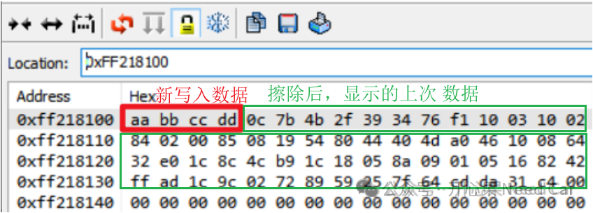

开心果 Need Car · 2026-06-24T06:23:00+08:00 · 微信原文
在汽车电子和工业控制领域，数据的可靠存储和频繁更新是系统设计的关键挑战。瑞萨电子RH850/F1KM系列微控制器采用了一项独特的数据闪存技术——互补读取（Complementary-Read，简称CR）机制，以实现更高的耐久性和可靠性。手册描述如下：
本文将深入解析CR机制的工作原理、行为特征及其在实际开发中的应用指导。
1. CR机制的核心原理
1.1 差分存储架构
传统闪存使用单个浮栅晶体管（Flash Cell）存储1比特数据，通过检测该单元的阈值电压是否超过参考电压来判断存储的是“0”还是“1”。更多细节可以参考《说一说Flash硬件的基本工作原理》。
这种单端存储方式在单元老化后，电压阈值会逐渐漂移，最终导致读取错误，限制了闪存的耐久性（Erase/Program循环次数）。
RH850/F1KM的数据闪存采用了完全不同的差分存储架构：每个数据位由两个闪存单元共同存储，这两个单元在编程时被设置到相反的电压水平——一个处于高阈值状态（代表“0”），另一个处于低阈值状态（代表“1”）。当读取数据时，通过比较这两个单元的电压差异来确定存储的逻辑值，而不是依赖单一单元的绝对电压。手册描述如下：
1.2 耐久性提升的物理原理
差分比较机制显著提升了数据闪存的耐久性。在传统单端存储中，随着擦写循环的增加，氧化层退化会导致阈值电压的窗口（Margin）不断缩小。而在差分存储中，两个单元的退化轨迹是相关的，即使单个单元的绝对值发生漂移，两者间的相对差异（Differential Level）仍然能够保持相对稳定。因此CR闪存的耐久性通常是传统单端闪存的数倍，非常适合需要频繁更新数据的EEPROM仿真场景。
2. 关键行为特性
2.1 擦除后的未定义状态
CR闪存最具挑战性的特性是：当数据闪存被擦除后，读出值在本质上是未定义的。手册描述如下：
在传统闪存中，擦除操作会将阈值电压拉到最低状态，读出值通常为固定的“1”或“0xFF”。但在CR机制中，擦除操作仅将两个互补单元之间的电压差减小到一个非常微弱的水平，而不是建立清晰的电压差。这种微弱的差分电平不足以明确指示该数据位是“0”还是“1”，因此读出的数值在理论上是不确定的，示意如下：

更多细节可以参考前文《信息安全：手撸RH850 Flash驱动的细节点》。
2.2 倾向于历史数据
更令人困惑的是，擦除后读出的“未定义”值并非完全随机。由于CR单元的物理特性，读出的电压差往往会偏向该存储区域之前最后一次编程所存储的数据。这意味着：如果一个区域之前存储了“0xA5”，即使在擦除后，多次读取该区域可能仍会得到“0xA5”或非常接近的值。手册描述如下：
这种现象可能导致严重误解——程序员可能误以为数据仍然存在，而实际上闪存已经处于可写入状态。
2.3 错误校正码（ECC）交互
CR闪存还配备了ECC（错误校正码）保护机制。ECC纠正逻辑设计用于处理正常编程状态下的单比特翻转，对于擦除区域的大面积“错误”数据，ECC逻辑会产生误判：
单比特ECC错误检测（SED，Single Error Detection）：擦除区域读取的“错误”数据可能被ECC误报为单比特错误。
双比特ECC错误检测（DED，Double Error Detection）：更严重的情况下可能触发双比特错误，导致读操作终止。
这正是FDL手册中特别强调“使用FDL直接访问时必须使用空白检查命令”的原因。
3. 开发实践指导
3.1 使用EEL库——推荐方案
EEPROM仿真库（EEL）是处理CR行为的最优方案。EEL在库内部实现了对CR机制的完整处理逻辑：
使用FDL的空白检查命令验证区域状态
通过REF Zone和ID-X表格管理数据实例
自动处理ECC错误，确保用户数据的一致性
开发者优势：使用EEL时，开发者无需关注CR的底层细节，所有处理由库透明完成。
3.2 使用FDL库——直接访问方案
直接使用FDL访问数据闪存时，必须遵循以下实践：
空白检查命令不可省略：R_FDL_CMD_BLANK_CHECK 是判断区域是否可写的唯一可靠方法。
避免直接读取判断：绝不能依赖读取值是否为0xFF来判断区域是否已擦除。
ECC错误处理：完整的读命令应使用 R_FDL_CMD_READ 而非内存映射直接读取，以获取ECC错误报告。
安全擦除：对于需要安全清理数据的场景，建议执行“擦除→写入固定模式→再次擦除”的三步流程，以消除“倾向历史数据”效应。
3.3 调试阶段的特殊处理
在调试阶段直接查看数据闪存时，标准调试器的显示数据是不可信的。调试器需要具备以下能力：
读取闪存控制器的状态寄存器，判断区域是“已擦除”还是“已写入”
在UI上提供额外的状态指示（如阴影背景或特殊颜色标注已擦除区域）
部分高端调试工具（如I-jet）提供专门的CR闪存显示模式
4. 性能考量
4.1 ECC带来的性能开销
CR闪存结合ECC机制，在提高可靠性的同时引入了性能开销：
读取时间：ECC检查和纠正增加了延迟，硬件手册中通常建议设置合适的等待周期（如 EEPRDCYCL 寄存器）
中断延迟：ECC错误处理可能触发中断，增加系统中断响应时间
4.2 与实时系统的平衡
对于实时性要求高的系统，建议：
使用EEL的缓冲读取机制（RAM Table缓存），减少直接Flash访问
合理配置FDL的空闲执行策略，避免长时间占用CPU
5. 总结
RH850/F1KM的互补读取数据闪存技术是一项为高可靠性设计的创新架构，通过差分存储实现了远超传统闪存的耐久性。但这一特性也带来了独特的工程挑战：擦除后数据的“未定义”和“倾向历史数据”行为。成功的开发实践取决于选择合适的软件栈——EEL库提供了透明的CR处理，而直接使用FDL则需要开发者深入理解并手动处理空白检查和ECC错误。理解CR机制的本质，是充分发挥RH850/F1KM数据闪存优势、构建高可靠应用的关键。
往期精彩回顾